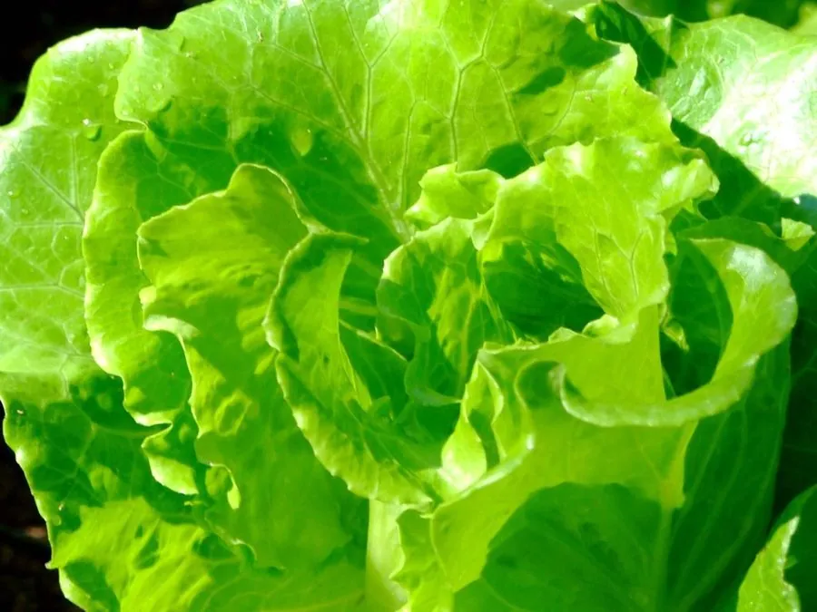

农作物与经济植物 · 植物界
生菜 Lactuca sativa

生菜是菊科莴苣的叶用变种，叶片脆嫩多汁，可生食做沙拉或包烤肉，是火锅与西餐中常见的蔬菜。
- 分类
- 门被子植物门纲双子叶植物纲目菊目科菊科属莴苣属
- 栖息环境
- 冷凉湿润的菜地、温室与水培环境，不耐高温
- 地理分布
- 原产地中海沿岸，现世界各地广泛栽培
- 保护级别
- 暂无评估（栽培作物）
物种志
生菜是菊科一年生或二年生草本，株高 0.2–0.4 m。叶片互生，形状因品种而异，有散叶、皱叶、结球等类型，颜色从浅绿到紫红；叶片薄而脆嫩，折断后有白色乳汁。花序为头状花序，黄色小花，但栽培上以采叶为主，抽薹开花后叶片变苦。
生菜原产欧洲地中海沿岸，由野生莴苣驯化而来，后传入中国，如今各地广泛栽培。它喜冷凉湿润、光照充足，不耐高温，适宜在疏松肥沃、保水力强的土壤中种植，生育期短，可周年生产。生菜含水量高、口感清脆，富含维生素和膳食纤维，可生食做沙拉、包烤肉、涮火锅，也可炒食。栽培时注意避免高温抽薹，否则叶片会变苦。
形态与习性
- 株高0.2–0.4 m
- 叶散叶、皱叶或结球，脆嫩
- 花头状花序，黄色
- 生育期短，可周年生产
- 用途生食沙拉、包烤肉、涮火锅
趣味知识
- 生菜有散叶、皱叶和结球等类型，都是同一个物种的不同品种。
- 生菜折断叶片会流出白色乳汁，这是菊科植物的特征。
- 高温下生菜容易抽薹，叶片会变苦。